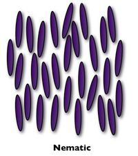
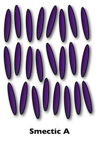
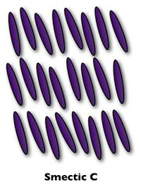
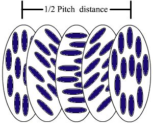

Liquid Crystal Phases
Nematic Phases
The nematic liquid crystal phase is characterized by molecules that have no positional order but tend to point in the same direction (along the director). In the following diagram, notice that the molecules point vertically but are arranged with no particular order.

A special class of nematic liquid crystals is called chiral nematic. Chiral refers to the unique ability to selectively reflect one component of circularly polarized light. The term chiral nematic is used interchangeably with cholesteric. Refer to the section on cholesteric liquid crystals for more information about this mesophase.
Smectic Phases
The word "smectic" is derived from the Greek word for soap. This seemingly ambiguous origin is explained by the fact that the thick, slippery substance often found at the bottom of a soap dish is actually a type of smectic liquid crystal.
The smectic state is another distinct mesophase of liquid crystal substances. Molecules in this phase show a degree of translational order not present in the nematic. In the smectic state, the molecules maintain the general orientational order of nematics, but also tend to align themselves in layers or planes. Motion is restricted to within these planes, and separate planes are observed to flow past each other. The increased order means that the smectic state is more "solid-like" than the nematic.
Many compounds are observed to form more than one type of smectic phase. As many as 12 of these variations have been identified, however only the most distinct phases are discussed here.
In the smectic-A mesophase, the director is perpendicular to the smectic plane, and there is no particular positional order in the layer. Similarly, the smectic-B mesophase orients with the director perpendicular to the smectic plane, but the molecules are arranged into a network of hexagons within the layer. In the smectic-C mesophase, molecules are arranged as in the smectic-A mesophase, but the director is at a constant tilt angle measured normally to the smectic plane.

As in the nematic, the smectic-C mesophase has a chiral state designated C*. Consistent with the smectic-C, the director makes a tilt angle with respect to the smectic layer. The difference is that this angle rotates from layer to layer forming a helix. In other words, the director of the smectic-C* mesophase is not parallel or perpendicular to the layers, and it rotates from one layer to the next. Notice the twist of the director, represented by the green arrows, in each layer in the following diagram
Cholesteric Phases
The cholesteric (or chiral nematic) liquid crystal phase is typically composed of nematic mesogenic molecules containing a chiral center which produces intermolecular forces that favor alignment between molecules at a slight angle to one another. This leads to the formation of a structure which can be visualized as a stack of very thin 2-D nematic-like layers with the director in each layer twisted with respect to those above and below. In this structure, the directors actually form in a continuous helical pattern about the layer normal as illustrated by the black arrow in the following figure and animation. The black arrow in the animation represents director orientation in the succession of layers along the stack.
Many compounds are observed to form more than one type of smectic phase. As many as 12 of these variations have been identified, however only the most distinct phases are discussed here.
In the smectic-A mesophase, the director is perpendicular to the smectic plane, and there is no particular positional order in the layer. Similarly, the smectic-B mesophase orients with the director perpendicular to the smectic plane, but the molecules are arranged into a network of hexagons within the layer. In the smectic-C mesophase, molecules are arranged as in the smectic-A mesophase, but the director is at a constant tilt angle measured normally to the smectic plane.

As in the nematic, the smectic-C mesophase has a chiral state designated C*. Consistent with the smectic-C, the director makes a tilt angle with respect to the smectic layer. The difference is that this angle rotates from layer to layer forming a helix. In other words, the director of the smectic-C* mesophase is not parallel or perpendicular to the layers, and it rotates from one layer to the next. Notice the twist of the director, represented by the green arrows, in each layer in the following diagram